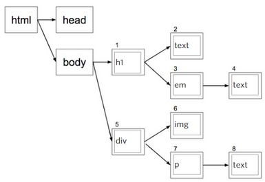

The internet is a vast collection of webpages (in the tens-of-billions), which are text documents most commonly of type HTML, interconnected via "hyperlinks."
To describe the internet in very broad terms: a web browser (a computer program for viewing webpages) requests an HTML file contained on the web (essentially the entirety of all servers and computers connected to the internet), via a protocol called HTTP (Hyper Text Transport Protocol), from the server (a computer optimized for hosting HTML documents and other files) on which the requested HTML file resides.The server in turn responds by sending the requested HTML file, also via HTTP and the web, to the web browser.
HTML, short for "Hyper Text Markup Language," is a filetype as well as a computer programming language containing text, and "markups" which web browser applications interpret as instructions for how to display content. For example, if a certain text phrase will appear in bold type, or where in the browser window to display a block of text. HTML documents may also contain references to other files like images and videos, as well as references to other HTML webpages, referred to as links or "hyperlinks." Links may in fact refer not only to other HTML files, but also to files of any other type.
HTML markups include tags, tag attributes, and container elements.
Some examples of tags are <b> (bold), <em> (emphasis: italics), <br> (line break), and <p> (paragraph). Certain tags are intended for altering font characteristics or formatting text; in such cases, an opening tag <TAG> and a closing tag </TAG> will encapsulate the text content to which such font and formatting constraints should be applied. Another example of a tag which alters then properties of enclosed text is the <a> (anchor) tag, which adds to text a "hyperlink" referring to another HTML file or other document. Text content contained within an anchor element becomes "clickable" when displayed by a web browser -- when that text is selected or left-clicked by a mouse, the web browser in turn will attempt to display the webpage or other file referenced by the hyperlink.
In cases where tags are intended for a use other than altering font or formatting properties of any proceeding text content, as is the case with the <img> (image) and <br> (line break) tags, a closing tag may be unnecessary -- tags of this sort are called "void tags."
An "element" refers to the HTML structure encompassing an opening tag, as well as any enclosed content and a closing tag (unless these two components are unnecessary, as with void tags). It should be noted that an element may contain any number of interior nested elements (i.e. "nested tags").
A programmer may be able to further specify the properties and behaviors of certain tags via their attributes, as is true with the anchor tag:
<a href:"www.google.com">click here to go to Google.com</a>Where "href:" is an attribute of the anchor tag, and "www.google.com" is the specified value of that attribute.
Container elements, which include <span> and <div> can be used as containers for text or other HTML content, which may also affect how the contained content will display in a web browser.
Both tags and container elements are categorized as either "inline" or "block," describing their behavior either as affecting HTML content only within a single line ("inline"), or as effectively creating an "invisible box" (whose height and width may be defined) around the content enclosed within the opening and closing tags ("block"). Inline elements include <b> , <em> , <img> , <br> , and <span>. Block elements include <p> and <div>.
CSS, short for "Cascading Style Sheet," is a programming language, complete with it's own syntax and rules, which is intended for controlling the visual style of a webpage. A CSS document may contain style parameters like font-size, font-color, border-width, background images, etc.
CSS is a powerful tool: one can simply change the CSS for a webpage and dramatically alter the way that page looks, without ever touching the HTML code.
By assigning class names to an HTML element (i.e. within an opening HTML tag, by adding the attribute "class" with an appropriate class name as its value) a web browser is provided with instructions for which CSS styles to use for that element. The value (the class name) of the class attribute on the HTML document refers to a CSS class of the same name located on a separate CSS document.
House Analogy for a Webpage:
DOM, short for "Document Object Model," is a standard convention which specifies how web browsers should translate the elements in an HTML text document into elements in a tree-like structure. The HTML structure displayed in Chrome Developer Tools is in essence a visual representation (in a form closely resembling an HTML document) of the DOM for a webpage.
I read elsewhere, including on the W3C (World Wide Web Consortium) website, that the DOM is an "API" (Application Programming Interface) -- if I understand correctly, the DOM can be thought of as a set of rules (in the form of a piece of code that a web browser understands) defining what web browser applications should do with HTML files.
The tree-like relationship of a page's HTML elements, or in other words the DOM of that page, can also represented as a block diagram:
It can be a useful exercise for a web developer to analyze the structure of an existing webpage by drawing rectangles, or "boxes," around all of the page's visible contents. To go about this process in a more tactile way, one could even print the page and cut out the boxes with scissors.
The process is straightforward and should start with identifying the largest boxes, i.e. the largest box representing the entire page, and secondary boxes representing grouped elements: for instance, one might draw a single box around separate images that all appear to be aligned on a horizontal plane. Continue the process by whittling down to smaller and smaller boxes.
Going through this effort can give a programmer a general sense for what the HTML code for a page might look like (especially in terms of the structure of <div> and <img> elements, visible contents, and some CSS parameters). This also seems like it would be a very practical method for getting started on coding a new webpage from a graphical mockup.
Chrome Developer Tools allows users to view HTML, CSS and Javascript code for any webpage (so far as I can tell), in split-screen format alongside or underneath the visible page. It should be noted that that the code displayed is not the actual code for the page, but the tree-like HTML structure of the page as Chrome interprets it (although it seems to me it could be very similar to the original code in many cases).
A couple of important points a programmer should consider when exploring the inner-workings of a page in this way:
In addition to providing insight into the HTML structure of a page, Developer Tools also allows users to view CSS Styles for that page, including the ability to change attribute values and immediately see the results in the page frame.
Although HTML and CSS are in fact plain text files which can be created and edited with a simple text editor like Windows Notepad, it is generally recommended that programmers use text editors specifically designed for computer programming. The code editor recommended in this course is Sublime Text 2, which features automatic coloration of different HTML components like tags and text content, as well as other visual aids like line numbers and indent guides. Using a code editor with such features can assist a programmer in writing programs which are both clean and comprehensible.
CSS stands for "Cascading Style Sheets." It is a programming language which allows programmers to avoid repetitive code, in large part through the use of classes. When several elements in an HTML document given the same class name, a single block of CSS code can apply to that entire group of elements. In this way, those elements will appear similarly-styled when displayed by a browser. In addition to classes, CSS rules can also be applied to standard HTML tags like <p> and <h1>.
To describe what the "Cascading" in CSS means: CSS rules which apply to a specified element (ancestor) will "cascade" down (imagine a waterfall) and apply to nested elements (descendants), unless more specific CSS rules are defined for those nested elements. To think of this in a slightly different way: the more specific the CSS rule, the higher the precedence. The "cascading" behavior of CSS is yet another way in which the language reduces repetitive code, promotes faster page-loading, and lower development costs.
This ancestor-descendent behavior is also referred to as "Inheritance." Inheritance generally applies to text-related properties, but not to box-related properties.
In addition to Inheritance, web browsers will also give precedence to CSS style rules in the following order with inline style code receiving the highest priority
Regarding browser default styles: there are currently many differences in the default styles of the most popular web browsers, which obviously is a dilemma for web developers. There is a push within the programming community to rectify this situation by introducing a universal default style sheet.
When possible, a programmer should create an external CSS document in the same directory as its related HTML documents (or perhaps in another directory which can be accessed by the browser). Any HTML documents which will use the external CSS file should contain a <link> tag with the CSS filename (the <link> tag should be nested inside of the <head> element) ; this instructs the browser on where to find the external document containing all of the needed CSS code. This approach lends itself to clearer HTML code, and makes future style adjustments fairly easy.
Alternatives to the above approach are internal style sheets (within the <head> of the HTML document), and inline style (by way of nesting CSS code within a <style> element). However, these methods should generally be avoided as they don’t offer as much benefit in terms of eliminating repetition compared with using external style sheets.
Selectors specify which HTML elements on a page styles will be applied to. Examples could be a standard HTML tag like <p> or a user defined class name, in the form ".descriptive_name"
Properties are the stylistic (visual) attributes for which a value or rule can be declared. CSS property examples are "font-weight" and "background-color," among what appear to be at least a couple hundred others. A property-value pair form a declaration.
An important note for those programming in CSS (and in other languages): it is impossible and unnecessary to get wrapped up in memorizing all of the properties and possible values that make up the language before attempting to use it -- one should go ahead with programming in CSS and get comfortable with frequenting online documentation as needed. The CSS reference linked in this lesson: https://developer.mozilla.org/en-US/docs/Web/CSS/Reference
It is best to use HTML tags which are semantically appropriate for the content contained within that element. That is to say, whenever possible, the chosen tag should have an intended use which is related to the content type -- like using <p> for a paragraph of text, or <h1> for a title, for instance.
The Box Model, which as far as I can tell applies to basically every HTML element, block and inline alike, consists of four concentric rectangles:
The total width an HTML box element will occupy on the screen is equal to the sum of the content, padding, and border widths; consequently, always having to keep the other two components in mind when making changes to one makes planning a page layout more challenging for developers.
The relatively recent CSS rule "border-sizing: border-box" makes the calculation of element size much easier, by including the border and pattern sizes, which makes it easier to layout boxes on the page. Just set the size of the overall box.
Box sizes can be set to a fixed number of pixels, or a percentage (in the case that they should automatically resize based on the size of the browser window); in the case of percentage sizes, boxes are often given a max-width attribute so that they can expand only up to a certain pixel width.
A good technique for distributing boxes horizontally within a <div> is to use the CSS Flexbox Layout module, most simply by adding the rule "display: flex" to a style sheet. For this method to work properly, the child elements need to be given a width smaller than the default 100% (via the "max-width" CSS property). Flexbox can be used in this way to override the default vertical-based behavior of divs, where nested divs are typically laid out one on top of the other. Flexbox appears to offer an abundance of features for distributing, automatically resizing, and wrapping child elements within a container element in any number of ways (it's not just for distributing and aligning horizontally, as was demonstrated in the lesson).
For some newer CSS properties like flexbox and "border-sizing: border-box" to work in certain browsers, it may be necessary to include what is called a "browser prefix" in the related CSS style declaration block which tells the browser to add support for that property. For example, flexbox is fully implemented and works by default in newer versions of Chrome and Firefox, but to get the feature to work in Safari one should add the following prefix to their CSS: "display: -webkit-flex;".
Work from big to small: when working from a design mock or some other form of instruction for coding a webpage, begin by identifying the boxes, then identify similar styles and semantic elements. Likewise, when beginning to code the page, start with the general layout of boxes (HTML) and then apply styles (CSS), fine-tuning from the biggest (or most general) style properties (like background-color, major box positioning adjustments, and title text) to smaller-and-smaller details (perhaps font-family, drop-shadow). By reviewing the updated page in a browser along the way, continue to fix things and fine-tune until the page styling appears as desired.
In addition to viewing the updated page in a browser, Chrome Dev Tools allows a developer to test different attributes and values prior to updating the actual code.
It's important to verify HTML and CSS in order to make sure that it is error-free and that it complies with browser standards.